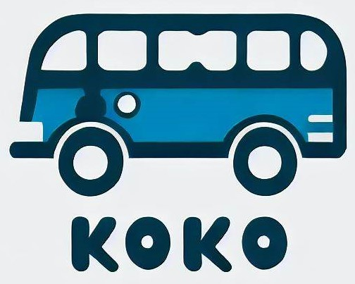

Consultá tu Horario
Seleccione el Servicio:
[Común] Villa Regina > Neuquén (ETON)
[Común] Neuquén (ETON) > Villa Regina
Seleccione una Ciudad:
Villa Regina (Inicio del recorrido)
Villa Regina (Final del recorrido)
Godoy
Huergo
Mainque
Cervantes
Stefenelli
General Roca
General Roca (Terminal)
Gomez
Guerrico
Allen
Fernandez Oro
Cipolletti
Neuquen (Centro)
ETON (Final del recorrido)
ETON (Inicio del recorrido)
¡Consultá!
¿A qué hora pasó el último?